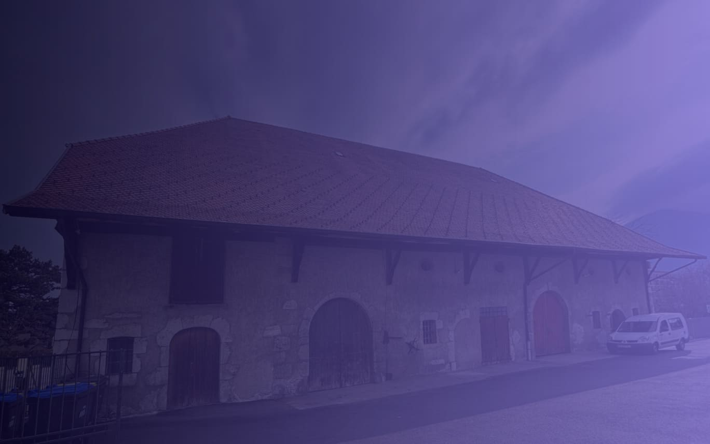
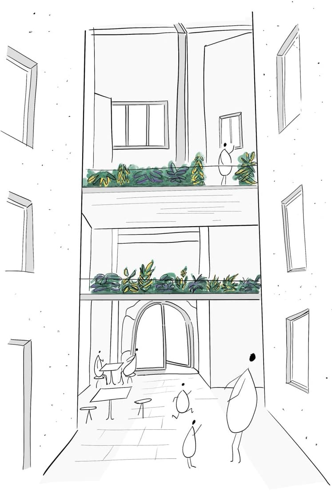

Et si ce lieu était le nôtre ?
Devenons-en coopératrices et coopérateurs.
218 coopératrices et coopérateurs. Premier palier : autant que de donatrices.
La Maison Audacieuse, c'est une ferme d'Annecy qui devient un lieu de vie solidaire.
Elle se construit en coopérative. Le lieu appartient à celles et ceux qui le financent.
À partir de 100 € la part.
Vous choisissez votre nombre de parts à l'écran suivant.
La ferme de Novel
Quartier de Novel, à Annecy. Rénovée, la ferme abritera :
- Un refuge pour les femmes qui fuient les violences.
- Un toit partagé pour des femmes âgées ou isolées.
- Un café culturel et associatif ouvert sur le quartier.
- Un pôle santé inclusif.
- Une maison de la créativité pour les enfants et les familles.
[TROU: cinq briques à revalider le 24/08 avec la programmation du 20/07]
Personne ne s'y enrichit, tout y vise l'équilibre et l'utilité.
 aujourd'hui
aujourd'hui
 demain
demain
Ce qui existe déjà
Plus de 650 personnes ont déjà donné pour ce lieu. La campagne de dons s'est refermée en avril. Le projet existe, il est sur les rails.
Grâce à elles, l'architecte travaille et la Ville d'Annecy a signé la promesse de bail de 99 ans. Depuis le 10 juillet, La Coop Audacieuse est immatriculée au registre du commerce d'Annecy.
Pour passer des plans aux murs, nous changeons d'étape et nous ouvrons la première levée de parts sociales.
Le don a lancé les études. La part fait exister le lieu.
[TROU: photo datée de la campagne de dons, Nextcloud 04 COM/01 Photos]
- 2025 :lauréat de l'appel à projets d'Annecy
- Mars 2026 :promesse de bail de 99 ans signée
- Avril 2026 :la campagne de dons se referme
- Juillet 2026 :la coopérative est immatriculée
La part sociale
Une part sociale, ce n'est pas un don. C'est un apport que vous confiez à la coopérative et qui reste le vôtre.
- À partir de 100 €. Une part coûte 100 €. Vous en prenez autant que vous le souhaitez.
- Vous devenez copropriétaire. Le lieu appartient à celles et ceux qui le financent. C'est un bien commun.
- Une personne, une voix. Quel que soit le nombre de parts, chacune et chacun pèse autant dans les décisions.
- Votre argent reste le vôtre. Vous pouvez demander le remboursement de vos parts, à leur valeur d'origine, selon les statuts.
Notre choix
Pour rénover cette ferme, il faudra emprunter. Mais une banque ne prête qu'à un projet qui apporte déjà une partie de la somme. C'est ce qu'on appelle l'apport.
Nous avons choisi de ne pas laisser une banque financer plus de la moitié de ce lieu. Moins d'emprunt, ce sont des loyers accessibles.
Plus notre apport citoyen est solide, plus la banque suit et plus le lieu reste abordable pour toutes et tous. Les statuts interdisent tout enrichissement personnel : l'excédent reste dans la coopérative.

Chaque part en appelle d'autres.
Ce que la part n'est pas.
- Ce n'est pas un placement. Les parts ne rapportent pas d'intérêts, c'est un choix : ici, l'argent sert le projet, pas la rente.
- Ce n'est pas immédiatement disponible. Le remboursement se demande, il suit les règles des statuts. On y met de l'argent qu'on peut laisser travailler un moment.
- Ce n'est pas un don défiscalisé. Si l'avantage fiscal compte pour vous, le don reste possible en complément.
Où on en est
218 coopératrices et coopérateurs ont déjà pris leur part de la Maison Audacieuse.
Plus nous sommes nombreuses et nombreux, plus le lieu reste accessible et plus il pèse face aux financeurs.
Devant nous, quatre paliers. Les deux premiers regardent notre histoire, les deux suivants le poids que ce lieu prend sur son territoire.
- 666 : celles qui ont donné reprennent leur part du lieu.
- 1 700 : celles qui ont signé en 2025 en deviennent copropriétaires.
- 3 000 : [TROU: lecture à valider le 24/08].
- 5 000 : l'objectif audacieux de cette campagne. [TROU: lecture du palier à valider le 24/08]
On ne donne pas à quelque chose, on devient quelque chose.
Le collectif
Ce lieu est porté par des associations annéciennes déjà à l'oeuvre. [TROU: liste des exploitantes à figer au 24/08]
Autour d'elles, des architectes et une équipe de maîtrise d'ouvrage.
On se retrouve le samedi 19 septembre pour la Fête de l'Audace, pendant les journées du patrimoine. Venez voir le bâtiment, rencontrer celles et ceux qui le portent et prendre votre part sur place.
[TROU: lieu et horaires de la Fête de l'Audace du 19/09, à poser en bloc date, lieu, adresse sous le paragraphe]
[TROU: photos de la Fête de l'Audace 1, Nextcloud 04 COM/01 Photos/2026.03 Fête de l'Audace, droit à l'image des personnes photographiées à vérifier avant mise en ligne]
Et vous ?
Prenez part à la Maison Audacieuse.
Une part vaut 100 €. Vous en prenez autant que vous le souhaitez.
Le don reste possible. Il est déductible à 66 % de vos impôts : un don de 100 € vous en coûte 34 €.
[TROU: URL HelloAsso à jour, la page de campagne doit être mise à jour avant la bascule]
Vous pouvez aussi en parler autour de vous ou venir nous donner un coup de main.
[TROU: bénévolat, décider entre un lien vers /contacts/ et un libellé sans lien]
[TROU: consentement et fréquence newsletter]